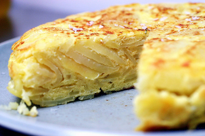

Tortilla
Información del plato
- Tipo de plato
- Comida
- Época del año recomendada
- Siempre
- Calorías
- 400 calorías
- Alergenos
- Siempre
Elaboración
Ingredientes
- 4 huevos
- 1/2 Kg. de patatas
- Aceite de oliva
- Sal
Elaboración
- Mientras ponemos abundante aceite de oliva a la sartén iremos cortando las patatas o papas a trocitos bien finos.
- Las pondremos en la sartén cuando el aceite esté bien caliente (nunca debe humear)
- Añadiremos un poco de sal y cuando estén bien doraditas las sacamos y escurrimos. Se puede utilizar un papel de cocina o un colador.
- Batimos bien los huevos, con una pizca de sal, añadimos las patatas ya fritas y mezclamos bien.
- Retiramos el aceite sobrante de la sartén (se puede reutilizar una segunda vez) y la volvemos a poner al fuego (normalmente solo con la fina capita de aceite que ha quedado en la sartén suele ser suficiente) En caso de que la sartén sea vieja hay que poner más aceite, un chorrito, ya que sino tiende a engancharse la tortilla de patatas.-
- Cuando la sartén este bien caliente echamos la mezcla de huevo y patatas.
- En el momento que vemos que ya está hecha o cuajada, por debajo, le daremos la vuelta con un plato plano o una tapadera. Ese es el punto clave ya que si no tenemos práctica puede terminar la tortilla de patatas en el suelo.
- Podemos darle un par de vueltas hasta que quede bien hecha por ambos lados.